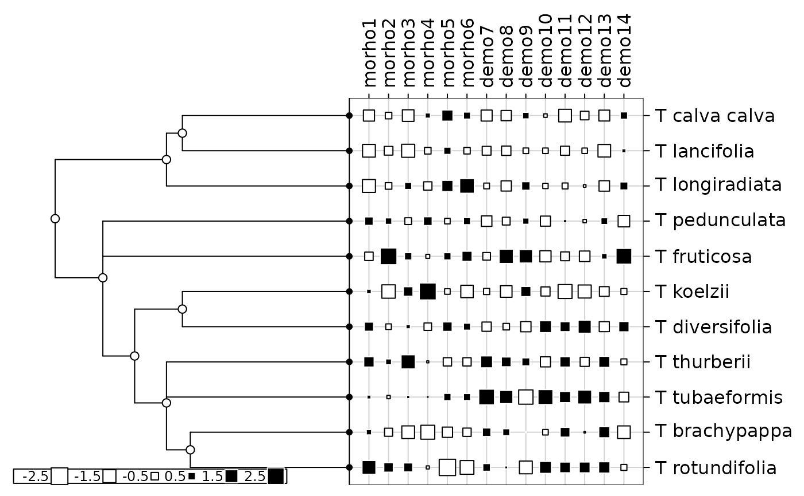

Phylogeny and quantitative traits of flowers
tithonia.RdThis data set describes the phylogeny of 11 flowers as reported by Morales (2000). It also gives morphologic and demographic traits corresponding to these 11 species.
Usage
data(tithonia)Format
tithonia is a list containing the 2 following objects :
- tre
is a character string giving the phylogenetic tree in Newick format.
- tab
is a data frame with 11 species and 14 traits (6 morphologic traits and 8 demographic).
Details
Variables of tithonia$tab are the following ones :
morho1: is a numeric vector that describes the seed size (mm)
morho2: is a numeric vector that describes the flower size (mm)
morho3: is a numeric vector that describes the female leaf size (cm)
morho4: is a numeric vector that describes the head size (mm)
morho5: is a integer vector that describes the number of flowers per head
morho6: is a integer vector that describes the number of seeds per head
demo7: is a numeric vector that describes the seedling height (cm)
demo8: is a numeric vector that describes the growth rate (cm/day)
demo9: is a numeric vector that describes the germination time
demo10: is a numeric vector that describes the establishment (per cent)
demo11: is a numeric vector that describes the viability (per cent)
demo12: is a numeric vector that describes the germination (per cent)
demo13: is a integer vector that describes the resource allocation
demo14: is a numeric vector that describes the adult height (m)
Source
Data were obtained from Morales, E. (2000) Estimating phylogenetic inertia in Tithonia (Asteraceae) : a comparative approach. Evolution, 54, 2, 475–484.
Examples
data(tithonia)
phy <- newick2phylog(tithonia$tre)
tab <- log(tithonia$tab + 1)
table.phylog(scalewt(tab), phy)

gearymoran(phy$Wmat, tab)
#> class: krandtest lightkrandtest
#> Monte-Carlo tests
#> Call: as.krandtest(sim = matrix(res$result, ncol = nvar, byrow = TRUE),
#> obs = res$obs, alter = alter, names = test.names)
#>
#> Number of tests: 14
#>
#> Adjustment method for multiple comparisons: none
#> Permutation number: 999
#> Test Obs Std.Obs Alter Pvalue
#> 1 morho1 0.7321356 4.9919224 greater 0.003
#> 2 morho2 0.3822949 0.4028036 greater 0.290
#> 3 morho3 0.3712126 0.3031029 greater 0.288
#> 4 morho4 0.2572795 -0.9358584 greater 0.800
#> 5 morho5 0.4457180 1.1314574 greater 0.132
#> 6 morho6 0.4089212 0.8271155 greater 0.169
#> 7 demo7 0.4416215 1.1663817 greater 0.100
#> 8 demo8 0.4822195 1.6698391 greater 0.057
#> 9 demo9 0.3043863 -0.4361658 greater 0.627
#> 10 demo10 0.2744296 -0.7895587 greater 0.837
#> 11 demo11 0.4458932 1.3577674 greater 0.104
#> 12 demo12 0.2640213 -0.9056478 greater 0.884
#> 13 demo13 0.6092138 3.6383476 greater 0.008
#> 14 demo14 0.3903768 0.5593619 greater 0.226
#>
gearymoran(phy$Amat, tab)
#> class: krandtest lightkrandtest
#> Monte-Carlo tests
#> Call: as.krandtest(sim = matrix(res$result, ncol = nvar, byrow = TRUE),
#> obs = res$obs, alter = alter, names = test.names)
#>
#> Number of tests: 14
#>
#> Adjustment method for multiple comparisons: none
#> Permutation number: 999
#> Test Obs Std.Obs Alter Pvalue
#> 1 morho1 0.53784586 2.9270317 greater 0.003
#> 2 morho2 0.10046720 0.6538660 greater 0.249
#> 3 morho3 0.07014773 0.3960272 greater 0.329
#> 4 morho4 -0.09223746 -0.6080752 greater 0.764
#> 5 morho5 0.35119692 2.1343545 greater 0.025
#> 6 morho6 0.17659490 0.9509727 greater 0.185
#> 7 demo7 0.44981278 2.6490493 greater 0.016
#> 8 demo8 0.25528857 1.4735568 greater 0.088
#> 9 demo9 -0.01050264 -0.0998193 greater 0.505
#> 10 demo10 -0.09660405 -0.5960010 greater 0.665
#> 11 demo11 0.26985310 1.3844109 greater 0.101
#> 12 demo12 -0.19861554 -1.1615760 greater 0.893
#> 13 demo13 0.63572312 3.4585095 greater 0.002
#> 14 demo14 0.05085783 0.3153468 greater 0.361
#>